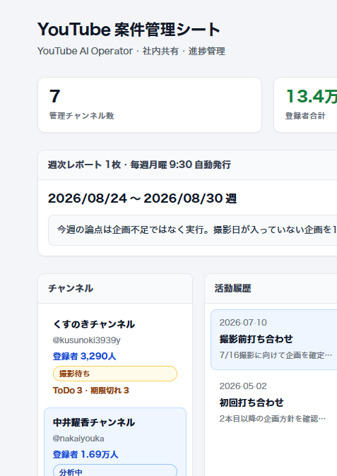

3ヶ月目｜ひな形を自分の画面に仕上げる
YouTube案件管理シート
第5回ワークの「3〜4ペインの絵」を、自分の仕事用の画面にした。
複数チャンネルの定例・宿題・数字が散らばるのを、1画面で「選ぶ → 見る → 動く」にする。
今月のゴールは見た目。データの本格保存は4ヶ月目。
01 · ツールの画面のキャプチャ
4ペインで仕事の情報を並べた
自分の仕事で毎日見るものを、左から右へ固定した。
① チャンネル案件を選ぶ。登録者とフェーズが見える。
② 活動履歴定例や打ち合わせの記録。
③ 詳細 / ToDo決定事項と、次に動く宿題。
④ 動画企画撮影・公開の進捗表。

画面キャプチャ（見た目確認用）。クライアント固有の中身は、発表では一般化して話す。
02 · ツールで解決できる課題
定例前の「情報探し」と、宿題の抜け漏れ
Before
- メモ・スプレッド・Studioを行き来する
- 前回の決定を探す時間が毎回かかる
- 宿題が口頭で消え、1週間後に気づく
- 登録者確認が手作業で、数字の鮮度がバラバラ
After
- チャンネルを選ぶと、履歴→決定→ToDoが一直線
- 7日未着手のToDoが目立つ
- 週次1枚で「止まっている案件」が見える
- 画面を開けば、次に何をするか分かる
使う場面：クライアント定例の前夜・当日、週初の進捗確認、チームへの引き継ぎ。
03 · 工夫したポイント
- 導線を固定した。 4ペインを増やしすぎず、「選ぶ → 見る → 動く」だけにした。
- 宿題を口頭で終わらせない。 議事録のToDoを右ペインに集め、7日止まると期限切れ表示にした。
- 評価の軸を決めた。 再生数ではなく、実行（撮影）・ToDo・公開まで通ったかを見る。
- 今月は見た目を先に完成させた。 保存やOAuthは後回し。毎日開ける画面を優先した。
04 · 苦戦したポイント
- 全部入れたくなった。 Analytics連携や自動保存まで一気にやると、画面の説明ができなくなる。見た目に切った。
- Studioの深い数字は取れない。 再生率・流入はAPIキーだけでは足りず、チャンネルオーナーのOAuthが必要だった。
- 情報をどこに置くか迷った。 週次レポートを4ペインの外に出した。上は「今週の論点」、下は「案件の中」と分けた。
- 固有名の扱い。 実案件で作っているので、提出・発表では一般化して話す判断をした。
05 · 5分発表メモ
- どんな画面にしたか（90秒） — 4ペイン。左でチャンネル、中央で履歴、右でToDo、下で企画。選んだ案件の「次の一手」が見える。
- 何を解決するか（90秒） — 企画不足より先に、決めたことが実行されない。探す時間を減らして、前に進める時間を増やす。
- 作ってみた感想（2分） — 面倒だったのは「全部自動化したくなること」。もっとやりたかったのはAnalytics連携。今月は見た目を完成させ、保存は4ヶ月目に回す。
話すときは画面共有でこの図解を開き、キャプチャを指しながら進める。